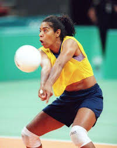
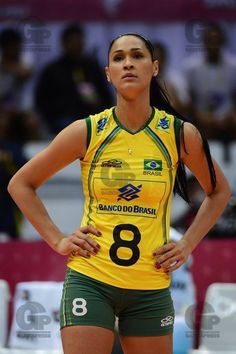

Universo do vôlei
O esporte que vem conquistando cada vez mais espaço
O esporte que vem conquistando cada vez mais espaço
Fofão, a renomada levantadora, é conhecida por sua magia nas quadras. Sua habilidade em distribuir jogadas e ler o jogo foi crucial para as vitórias do Brasil. Além disso, Fofão é um exemplo de longevidade na carreira, demonstrando que a experiência e a paixão pelo esporte podem transcender as expectativas.
Atuou como meio-de-rede, ponteira e oposto. Medalhista olímpica, chegou a ser eleita uma das dez melhores jogadoras do mundo em 1996
Ana Moser, uma das pioneiras do voleibol feminino no Brasil, merece destaque. Sua determinação e habilidades como atacante a colocaram no cenário internacional. Ana participou de quatro Olimpíadas e é lembrada não apenas por suas conquistas em quadra, mas também por seu papel inspirador para as futuras gerações de atletas femininas.
Fabiana Claudino, conhecida como Fabi, é uma central que deixou sua marca no voleibol brasileiro. Com altura imponente e agilidade surpreendente, Fabi foi uma peça-chave nas conquistas da seleção feminina. Com três medalhas olímpicas, sendo duas de ouro, ela demonstrou consistência e liderança ao longo de sua carreira.
Jaqueline Carvalho, ou Jaque, é uma líbero que se destacou por sua destemida atuação defensiva. Com incrível habilidade de defesa e recepção precisa, ela foi fundamental nas vitórias da seleção feminina. Jaque conquistou três medalhas olímpicas, sendo duas de ouro, e seu espírito competitivo e versatilidade a tornaram uma referência no voleibol brasileiro.
Em outras palavras, Sheilla é uma das melhores jogadoras de voleibol feminino do Brasil. Conhecida por sua potência nos ataques e precisão nos bloqueios, ela conquistou admiradores em todo o mundo. Sheilla foi peça fundamental nas conquistas olímpicas do Brasil, sendo uma das maiores pontuadoras em várias competições internacionais.
É uma jogadora de voleibol brasileira bicampeã olímpica. Atua como meio-de-rede. É frequentemente apontada como uma das maiores jogadoras brasileiras de todos os tempos e também uma das maiores centrais da história do voleibol mundial.